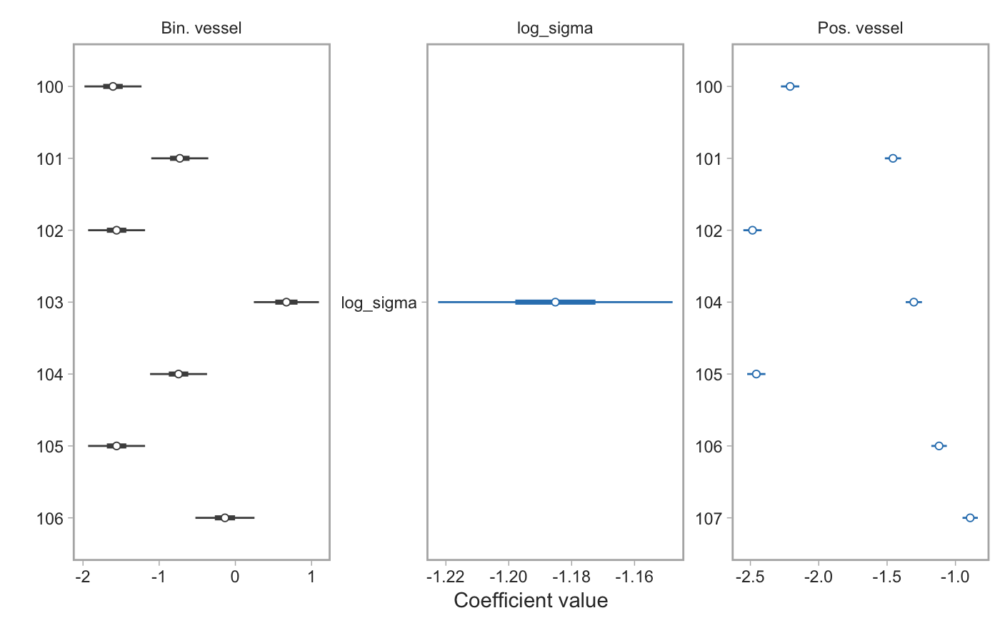
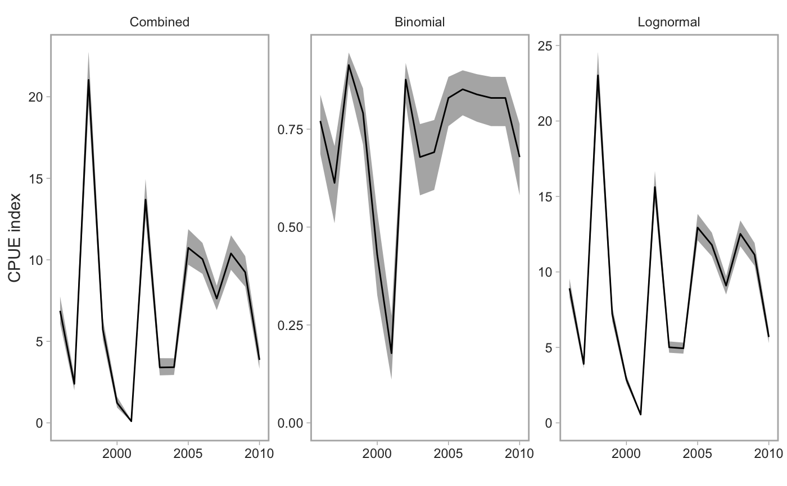

fit_cpue_index() fits a delta-lognormal commercial CPUE
standardization model
predict_cpue_index() predicts from a delta-lognormal
commercial CPUE standardization model
plot_cpue_index() plots a delta-lognormal commercial CPUE
standardization model
tidy_cpue_index_coefs() extracts coefficients from a CPUE
index standardization model
plot_cpue_index_coefs() plots coefficients from a CPUE index
standardization model
plot_cpue_index_jk() "jackknifes" out terms one by one to
test the sensitivity of the standardization model to any one term.
fit_cpue_index(dat, formula_binomial = pos_catch ~ year_factor + f(month) + f(vessel) + f(locality) + f(depth) + f(latitude), formula_lognormal = log(spp_catch/hours_fished) ~ year_factor + f(month) + f(vessel) + f(locality) + f(depth) + f(latitude)) predict_cpue_index(object, center = FALSE) plot_cpue_index(predicted_dat, all_models = TRUE) tidy_cpue_index_coefs(object) plot_cpue_index_coefs(object) plot_cpue_index_jk(object, terms = c("f(month)", "f(vessel)", "f(locality)", "f(depth)", "f(latitude)"), return_data = FALSE)
| dat | A data frame from |
|---|---|
| formula_binomial | Formula for the binomial model. |
| formula_lognormal | Formula for the lognormal model. |
| object | Model output from |
| center | Should the index be centered by subtracting the mean in link space? |
| predicted_dat | Input data frame, for example from |
| all_models | Logical for whether to plot all models ( |
| terms | A character vector of terms to jackknife out. |
| return_data | Logical: should the data be returned? |
Note that for coefficients for predictors treated as factors (i.e.
likely all of the predictors), the coefficients represent the difference
from the base level factor. For example, if January was the base month,
month 02 represents the estimated difference between February and January.
The default setup of the function gfplot::f() sets the reference level as
the most common factor level.
#> # A tibble: 2,400 x 8 #> year_factor vessel vessel_effect year_effect pos_catch spp_catch #> <fct> <fct> <dbl> <dbl> <int> <dbl> #> 1 1996 100 -0.626 0.576 0 0 #> 2 1997 100 -0.626 -0.305 0 0 #> 3 1998 100 -0.626 1.51 0 0 #> 4 1999 100 -0.626 0.390 1 0.639 #> 5 2000 100 -0.626 -0.621 0 0 #> 6 2001 100 -0.626 -2.21 0 0 #> 7 2002 100 -0.626 1.12 1 1.61 #> 8 2003 100 -0.626 -0.0449 0 0 #> 9 2004 100 -0.626 -0.0162 0 0 #> 10 2005 100 -0.626 0.944 1 1.55 #> # ... with 2,390 more rows, and 2 more variables: hours_fished <dbl>, #> # year <dbl>m <- fit_cpue_index(d, formula_binomial = pos_catch ~ year_factor + f(vessel), formula_lognormal = log(spp_catch / hours_fished) ~ year_factor + f(vessel) )#>#> outer mgc: 18.16203 #> outer mgc: 38.65155 #> outer mgc: 40.33367 #> outer mgc: 4.263728 #> outer mgc: 2.146999 #> outer mgc: 0.3803895 #> outer mgc: 0.6327285 #> outer mgc: 1.585005 #> outer mgc: 0.5696561 #> outer mgc: 0.2834696 #> outer mgc: 0.2501817 #> outer mgc: 0.9005896 #> outer mgc: 1.503273 #> outer mgc: 0.8237612 #> outer mgc: 0.1425632 #> outer mgc: 0.6564207 #> outer mgc: 0.4856175 #> outer mgc: 0.06884102 #> outer mgc: 0.3397257 #> outer mgc: 0.03668822 #> outer mgc: 0.0775485 #> outer mgc: 0.1631594 #> outer mgc: 0.0412248 #> outer mgc: 0.1507742 #> outer mgc: 0.1180563 #> outer mgc: 0.3156683 #> outer mgc: 0.2143567 #> outer mgc: 0.03277684 #> outer mgc: 0.1822577 #> outer mgc: 0.06466609 #> outer mgc: 0.04985452 #> outer mgc: 0.08235427 #> outer mgc: 0.07217389 #> outer mgc: 0.05281763 #> outer mgc: 0.02596895 #> outer mgc: 0.1104628 #> outer mgc: 0.1727993 #> outer mgc: 0.04742673 #> outer mgc: 0.03659281 #> outer mgc: 0.06434145 #> outer mgc: 0.1337844 #> outer mgc: 0.09687177 #> outer mgc: 0.05024443 #> outer mgc: 0.02571725 #> outer mgc: 0.0633295 #> outer mgc: 0.05085051 #> outer mgc: 0.02961527 #> outer mgc: 0.04519141 #> outer mgc: 0.03597332 #> outer mgc: 0.01792052 #> outer mgc: 0.07691212 #> outer mgc: 0.03517653 #> outer mgc: 0.01998099 #> outer mgc: 0.03344707 #> outer mgc: 0.01761085 #> outer mgc: 0.0147589 #> outer mgc: 0.1209062 #> outer mgc: 0.04551657 #> outer mgc: 0.02446663 #> outer mgc: 0.04760239 #> outer mgc: 0.014217 #> outer mgc: 0.01383722 #> outer mgc: 0.02394252 #> outer mgc: 0.01764208 #> outer mgc: 0.01925579 #> outer mgc: 0.02257496 #> outer mgc: 0.01805595 #> outer mgc: 0.02418044 #> outer mgc: 0.07266616 #> outer mgc: 0.01918367 #> outer mgc: 0.01559321 #> outer mgc: 0.03916468 #> outer mgc: 0.01667237 #> outer mgc: 0.03265156 #> outer mgc: 0.01071854 #> outer mgc: 0.06714823 #> outer mgc: 0.02676252 #> outer mgc: 0.006330769 #> outer mgc: 0.03460745 #> outer mgc: 0.07749323 #> outer mgc: 0.01522156 #> outer mgc: 0.02358902 #> outer mgc: 0.01377907 #> outer mgc: 0.03577261 #> outer mgc: 0.02925306 #> outer mgc: 0.01382341 #> outer mgc: 0.0266327 #> outer mgc: 0.01928024 #> outer mgc: 0.01473313 #> outer mgc: 0.009602482 #> outer mgc: 0.01982061 #> outer mgc: 0.02025932 #> outer mgc: 0.03283396 #> outer mgc: 0.01128431 #> outer mgc: 0.0462567 #> outer mgc: 0.02087179 #> outer mgc: 0.004665925 #> outer mgc: 0.02131528 #> outer mgc: 0.009672799 #> outer mgc: 0.003836905 #> outer mgc: 0.01142405 #> outer mgc: 0.005572737 #> outer mgc: 0.006087384 #> outer mgc: 0.008458923 #> outer mgc: 0.005442399 #> outer mgc: 0.002736445 #> outer mgc: 0.01110281 #> outer mgc: 0.02172887 #> outer mgc: 0.01446717 #> outer mgc: 0.004121331 #> outer mgc: 0.008627783 #> outer mgc: 0.00882583 #> outer mgc: 0.002336504 #> outer mgc: 0.006663005 #> outer mgc: 0.003711888 #> outer mgc: 0.001859299#>#> outer mgc: 0.001859299 #> outer mgc: 0.4525333 #> outer mgc: 0.4533535 #> outer mgc: 0.03447878 #> outer mgc: 0.03465229 #> outer mgc: 0.02275362 #> outer mgc: 0.02302559 #> outer mgc: 0.03251901 #> outer mgc: 0.03342155 #> outer mgc: 0.02891557 #> outer mgc: 0.02963368 #> outer mgc: 0.0158956 #> outer mgc: 0.016012 #> outer mgc: 0.02711328 #> outer mgc: 0.0276908 #> outer mgc: 0.03444788 #> outer mgc: 0.03514464 #> outer mgc: 0.03517992 #> outer mgc: 0.03513159 #> outer mgc: 0.03093385 #> outer mgc: 0.03142003 #> outer mgc: 0.02957692 #> outer mgc: 0.02989774 #> outer mgc: 0.0304061 #> outer mgc: 0.03084475 #> outer mgc: 0.03130707 #> outer mgc: 0.03141993 #> outer mgc: 0.03110182 #> outer mgc: 0.03141999 #> outer mgc: 0.03479988 #> outer mgc: 0.03514464 #> outer mgc: 0.0634935 #> outer mgc: 0.0636372 #> outer mgc: 0.06181426 #> outer mgc: 0.06197093 #> outer mgc: 0.063744 #> outer mgc: 0.06400049 #> outer mgc: 0.03711494 #> outer mgc: 0.03721047 #> outer mgc: 0.06193546 #> outer mgc: 0.06215112 #> outer mgc: 0.0637811 #> outer mgc: 0.06400049 #> outer mgc: 0.05234919 #> outer mgc: 0.0528198 #> outer mgc: 14.79089 #> outer mgc: 14.78717 #> outer mgc: 0.7616432 #> outer mgc: 0.7599324 #> outer mgc: 1.393013 #> outer mgc: 1.390907 #> outer mgc: 1.082679 #> outer mgc: 1.081561 #> outer mgc: 0.5048148 #> outer mgc: 0.5028105 #> outer mgc: 0.2051818 #> outer mgc: 0.2031028 #> outer mgc: 1.286001 #> outer mgc: 1.283923 #> outer mgc: 0.868655 #> outer mgc: 0.8671659 #> outer mgc: 0.8900574 #> outer mgc: 0.8878117 #> outer mgc: 1.168288 #> outer mgc: 1.166345 #> outer mgc: 1.221794 #> outer mgc: 1.220352 #> outer mgc: 1.18969 #> outer mgc: 1.188141 #> outer mgc: 1.168288 #> outer mgc: 1.166722 #> outer mgc: 1.168288 #> outer mgc: 1.166882 #> outer mgc: 0.868655 #> outer mgc: 0.8658692 #> outer mgc: 1.2753 #> outer mgc: 1.272443 #> outer mgc: 1.874566 #> outer mgc: 1.872749 #> outer mgc: 1.307403 #> outer mgc: 1.305263 #> outer mgc: 1.863865 #> outer mgc: 1.862428 #> outer mgc: 1.307403 #> outer mgc: 1.305494 #> outer mgc: 2.238406 #> outer mgc: 2.235341 #> outer mgc: 2.313315 #> outer mgc: 2.311207 #> outer mgc: 2.761134 #> outer mgc: 2.76687 #> outer mgc: 1 #> outer mgc: 0.001859299plot_cpue_index_coefs(m)predict_cpue_index(m) %>% plot_cpue_index()plot_cpue_index_jk(m, terms = "f(vessel)")#># NOT RUN { # An example with PBS data: # (the data extraction will be slow) d <- get_cpue_index(gear = "bottom trawl") walleye <- tidy_cpue_index(d, "walleye pollock", area_grep_pattern = "5[CDE]+") m <- fit_cpue_index(walleye) plot_cpue_index_coefs(m) predict_cpue_index(m) %>% plot_cpue_index() plot_cpue_index_jk(m) # }